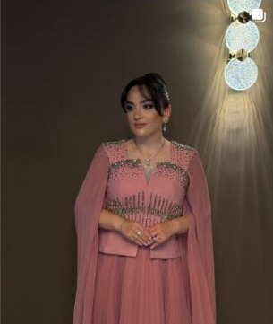

Личный блог,
в котором слышен
ваш голос.
Развитие блога акушера-гинеколога
Шукуфы Исаевой
Ваш подход к женскому здоровью, живые истории и понятные объяснения — в системе контента, которая помогает знакомиться с вами и получать полезные материалы.

Развитие личного блога акушера-гинеколога
Мы предлагаем развитие вашего блога как авторского пространства о женском здоровье. В публикациях будем рассказывать о вашей работе и подходе к пациенткам, разбирать вопросы аудитории и знакомить подписчиков с гайдами.
Цели и метрики эффективности
1. Выделить ваш личный бренд среди других врачебных блогов. Определим, для какой аудитории вы ведёте блог, с какими вопросами к вам стоит обращаться и в чём особенности вашего подхода. Сформулируем позиционирование и отразим его в описании профиля, знакомстве и публикациях.
Метрики: охват новой аудитории, переходы в профиль, подписки после публикаций, вопросы и обращения.
2. Найти рабочие темы и форматы, которые подходят вам и интересны аудитории. Подберём рубрики с учётом ваших профессиональных интересов, манеры общения и запросов подписчиков. Проверим разные способы подачи и будем развивать те, на которые люди откликаются.
Метрики: досмотры видео, сохранения, пересылки, ответы на истории и подписки по темам и форматам.
3. Разработать и настроить воронку для получения гайдов. Подготовим публикации с предложением материала, настроим выдачу по кодовому слову и проверим, доходит ли гайд до подписчика. При необходимости поможем с оформлением файлов.
Метрики: запросы по кодовому слову, успешная выдача, переходы к материалу и вопросы после получения.
Можно начать с отдельной SMM-стратегии или сразу с ведения по выбранному тарифу. Первые результаты по контенту оцениваем через месяц, общую динамику — через 8–12 недель.
Платформа платных консультаций остаётся возможным следующим этапом и в стартовый объём не входит.
Анализ текущей ситуации
Что уже работает
В профиле уже указана специальность, есть информация об образовании, уровне квалификации и профессиональном пути.
Живой контент вовлекает подписчиков: под личными фотографиями есть комментарии и реакции. Видно, что аудитория уже знакома с вами и откликается на события вашей жизни. Продолжим делиться такими моментами и дополним их историями о работе, обучении и ваших интересах.
Зоны роста
Позиционирование. Специальность указана, но фраза «Забота о женском здоровье» не объясняет, чем вы отличаетесь от других врачей и что читательница найдёт именно у вас. Сформулируем эти отличия и отразим их в профиле и контенте.
Личные публикации. Несколько фотографий сопровождаются только эмодзи. Они показывают события, но мало рассказывают о вас. Добавим истории, мнения и детали, которые вам хочется обсуждать с аудиторией.
Экспертные рубрики. Темы уже есть, но по доступной выборке не видна последовательность, которая знакомила бы нового подписчика с вашим подходом. Подготовим рубрики и серии на основе вопросов аудитории.
Навигация и гайды. На первом экране не обозначено, какие материалы можно получить и как это сделать. Обновим знакомство, наполним актуальные истории, закрепим инструкцию и настроим выдачу.
В открытой части профиля на 22 октября — 499 подписчиков. Охваты, сохранения и источники подписок разберём по внутренней статистике.
Позиционирование и целевая аудитория
Предлагаемое позиционирование
Исаева Шукуфа Абульфат кызы — акушер-гинеколог, который в блоге рассказывает об особенностях женского здоровья, разбирает распространённые мифы и заблуждения, объясняет, как подготовиться к приёму у гинеколога.
Эту формулировку предлагаем как основу для описания профиля и контента. Дополнительно выделим ваши профессиональные интересы и особенности работы с пациентками.
Целевая аудитория
| Возраст | Основные запросы | Темы для блога |
|---|---|---|
| 18–25 лет | Первые самостоятельные визиты к гинекологу, вопросы о цикле и контрацепции, неловкость перед приёмом | Как проходит визит, что спросить у врача, разбор мифов |
| 25–35 лет | Контрацепция, обследования, подготовка к беременности, изменения цикла | Ответы на частые вопросы, подготовка к приёму, памятки |
| 35–45 лет | Изменения цикла, профилактические визиты, выбор обследований и методов контрацепции | Что обсудить с врачом, как описать жалобы, как разобраться в информации |
Это предлагаемые сегменты для планирования публикаций, а не установленный состав подписчиков. Их долю и приоритет уточним по статистике и вашим направлениям практики. Географию очного приёма укажем в справочной информации.
Что обновим в оформлении профиля
- Описание профиля и формулировку ваших отличий.
- Закреплённые публикации: знакомство, темы блога и гайды.
- Актуальные истории: наполним разделы и выстроим навигацию по материалам и частым вопросам.
- Визуальное оформление: при необходимости обновим обложки и оформление публикаций, сохранив живые фотографии и вашу подачу.
Основной площадкой остаётся Instagram*. ВКонтакте, Telegram и MAX предусмотрены тарифами; порядок их подключения согласуем отдельно.
Темы и способы их раскрытия
При выборе тем учитываем ваши направления работы и вопросы подписчиков. Для каждой темы подбираем подачу: объяснение на видео, карусель, личную историю или ответы на вопросы.
| Темы блога | Что обсуждаем | Примеры подачи |
|---|---|---|
| Женское здоровье | Цикл, обследования, контрацепция и вопросы, которые вы разбираете в практике | Короткое объяснение, схема, разбор утверждения |
| Знакомство с врачом | Ваш выбор профессии, обучение, рабочие принципы и личные интересы | История с фото, интервью, эпизод рабочего дня |
| Подготовка к общению | Что спросить на приёме, что рассказать врачу, где найти материал | Карусель, видео из кабинета, ответы в истории |
| Гайды | Для кого создан материал, что внутри и как его получить | Фрагмент файла, объяснение автора, инструкция |
Одна тема в нескольких публикациях
Например, тему подготовки к приёму можно начать с короткого ответа врача. Затем выпустить карусель с вопросами, которые удобно записать заранее, собрать вопросы в истории и представить готовую памятку, если такой гайд уже есть.
Необязательно публиковать всё подряд. Материалы распределяем по плану, а для каждой публикации выбираем одну задачу: объяснить, познакомить, собрать вопрос или выдать гайд.
Съёмка
До съёмки команда готовит вопросы, тезисы и список кадров. Из одного содержательного ответа можно сделать короткий ролик и несколько историй. Карусель по этой теме собираем из согласованных тезисов. Личный эпизод оставляем отдельной историей, если он этого заслуживает.
Такие материалы входят в лимит пакета. После первого месяца уточним, какие темы и форматы стоит повторять.
Предварительное оформление блога
В профиле уже есть живые фотографии и розовые карточки. Предлагаем сохранить это направление, обновить оформление публикаций и проверить, как они выглядят рядом с вашими фото.
Это предварительные эскизы для обсуждения. Фотографии, точные заголовки и содержание первого гайда подбираем после получения материалов.
Экспертный контент
Цель: показывать ваш подход через понятное объяснение одного вопроса или ситуации.
Зачем: читательница получает ответ на свой вопрос, знакомится с вашим подходом и может сохранить объяснение или переслать его близким.
Как выглядит
- Короткий ответ на один вопрос о женском здоровье.
- Разбор распространённого утверждения с пояснением вашей позиции.
- Карусель «Что важно обсудить с врачом».
- Объяснение на простой схеме или макете.
Возможные темы: «Как врач выбирает обследования», «Какие вопросы о цикле стоит записать перед приёмом», «Почему одного симптома недостаточно для диагноза». Медицинские тезисы согласовываем с вами.
Берём короткий фрагмент разговора, ясно обозначенную тему и субтитры. Для вашего блога используем заголовок с конкретным вопросом. Тему и выводы референса не переносим автоматически: каждый материал готовим на основе ваших комментариев.
Сервисный контент
Цель: помогать читательницам ориентироваться в общении с врачом и подготовке к визиту.
Зачем: перед приёмом часто остаются простые вопросы: что взять с собой, о чём рассказать, когда задать свой вопрос. На них можно ответить заранее в блоге.
Как выглядит
- Как собрать вопросы к гинекологу и ничего не забыть.
- Что врачу важно знать о вашей истории.
- Как устроен приём и когда можно задать вопросы.
- Как пользоваться готовой памяткой и где её найти повторно.
Форматы: карусель, короткое видео из кабинета, серия историй с ответами. Актуальные сведения о месте и способе записи публикуем после подтверждения.
Материал объясняет, где принимает врач, с какими вопросами к ней обращаются и как организован визит. Для вас применим принцип конкретного ответа на организационный вопрос. Сведения о клинике и длительности приёма из примера не относятся к вашему проекту.
Личный и доверительный контент
Цель: познакомить подписчиков с вами, вашим отношением к работе и общению с пациентками.
Зачем: фотографии показывают вас, а истории — ваше отношение к работе, людям и повседневным событиям.
Как выглядит
- Почему вы выбрали акушерство и гинекологию.
- Как изменился ваш взгляд на профессию после возвращения к работе.
- Чему вы учитесь и что применяете в практике.
- Как объясняете сложный вопрос на приёме.
- Семья, отдых и повседневная жизнь в комфортных для вас границах.
Часть личных фотографий дополним короткими историями. Повседневные эпизоды можно оставлять самостоятельными, без обязательного медицинского вывода.
Берём рассказ от первого лица о своей работе и принятых решениях. Для вашего блога это может быть история профессионального выбора, обучения или принципа общения с пациенткой. Управленческая тема референса — пример авторского подхода, а не предлагаемое направление вашего контента.
Вовлекающий контент
Цель: узнавать, что волнует читательниц, и отвечать на эти вопросы в блоге.
Зачем: вопросы читательниц становятся темами следующих публикаций. Заодно люди слышат, как вы объясняете и общаетесь.
Как выглядит
- Регулярная рубрика вопросов в историях.
- Опрос «Какую тему разобрать следующей».
- Короткий видеоответ на частый вопрос без персональных медицинских данных.
- Разбор мифа с выбором ответа и последующим объяснением.
Не предлагаем публично описывать симптомы или размещать результаты обследований. Индивидуальные назначения в комментариях не входят в работу с блогом.
В публикации обозначены специалист и время ответа. Для Instagram* переносим ясное приглашение задать вопрос и заранее оговорённый формат участия врача. В стартовом месяце предлагаем два сбора вопросов в истории; их оформление входит в общий лимит историй выбранного пакета.
Продающий контент
Цель: побуждать подписчика к действию — получить гайд, задать вопрос или обратиться к врачу. На старте основной призыв связываем с получением гайдов.
Зачем: читательница получает материал, к которому можно вернуться. Мы видим, какие темы вызывают запросы, и учитываем это в следующих публикациях.
Как выглядит
- Публикация объясняет вопрос и показывает, чем поможет готовый гайд.
- Истории знакомят с содержанием: для кого материал, что внутри, как получить.
- В закреплённых публикациях или актуальных историях разместим инструкцию по получению.
- Читательница отправляет кодовое слово в директ и получает ссылку.
Первый гайд выбираем из ваших материалов. В публикации объясним, для кого он подготовлен, что внутри и какое слово отправить в директ.
Берём понятное название, объяснение пользы и простой доступ к файлу. В самом примере материал доступен по ссылке. Для вашего проекта предлагаем выдачу по кодовому слову; наличие автоматизации у клиники этим примером не подтверждается. Скидочные механики в стартовый план не включаем.
Воронка для получения гайдов
Для деликатных тем — личное сообщение. Без публичного описания своей ситуации.
Путь подписчика
Публикация по теме → предложение гайда → кодовое слово в директ → сообщение со ссылкой → получение материала и дальнейшие публикации по теме.
Для деликатных тем предлагаем писать кодовое слово в личном сообщении. Подписчику не нужно публично описывать свою ситуацию.
Что готовим мы
- Изучаем ваши гайды, выбираем первый материал и при необходимости помогаем с его структурой и оформлением. Медицинское содержание согласовываем с вами.
- Готовим публикации и истории, которые объясняют пользу материала и предлагают его получить.
- Разрабатываем воронку: кодовое слово, сообщение с выдачей, действия при повторном запросе или ошибке.
- Подбираем доступный для аккаунта сервис и настраиваем выдачу. Проверяем сценарий с тестового аккаунта до запуска.
- Проверяем отправку и переход к материалу в пределах данных сервиса. При сбое исправляем сценарий и помогаем подписчику получить файл.
- Отслеживаем запросы и результаты выдачи, сравниваем публикации и корректируем подачу.
Как выглядит сообщение
«Вы запросили гайд. Вот ссылка на материал. Если файл не открывается, напишите нам в ответ». В рабочем сообщении указываем название конкретного гайда и проверенную ссылку.
Что проверяем перед запуском
Распознавание кодового слова, повторный запрос, доступ к файлу с телефона, исправность ссылки и уведомление об ошибке. Назначаем человека, который подключится, если автоматический ответ не сработает.
Как оцениваем результат
Количество запросов, успешных отправок, ошибок и переходов по ссылке, если сервис их фиксирует. Если данных об открытии файла нет, не называем отправку подтверждённым прочтением.
Настройкой воронки занимается наша команда. Платные подписки на сервисы согласуем до подключения. Создание новых медицинских материалов с нуля и платформа консультаций в этот этап не входят.
Анализ конкурентов
Сравниваем десять проектов по подаче контента, оформлению и общению с аудиторией. В таблице собраны клиники и врачебные блоги из разных городов. Это конкурентное поле за внимание подписчиков; пересечение по очному приёму зависит от географии.
| Проект и площадка | Сильные стороны | Что можем использовать |
|---|---|---|
| Клиника Фомина ↗ | Женское здоровье, памятки, публикации с бесплатными материалами | Объяснять пользу гайда и давать инструкцию по получению |
| DocDeti и DocMed ↗ | Комментарии врачей, рубрики вопросов, разборы заблуждений | Регулярные ответы на вопросы с участием врача |
| Lahta Clinic ↗ | Видео о процедурах и этапах обращения | Показывать, как проходит визит, и отвечать на организационные вопросы |
| W Clinic ↗ | Разговорная подача, знакомство со специалистами | Рассказывать о враче через его работу и ответы |
| Олимп Клиник ↗ | Разделы по направлениям, видео, совместные публикации | Оформить навигацию и использовать совместные материалы |
| Алина Калинина ↗ | Выраженный характер автора, видео и юмор | Развивать узнаваемые рубрики с учётом вашей манеры общения |
| Екатерина Спицына ↗ | Конкретные темы в описании, тематические разделы и видео | Показать круг вопросов, с которыми можно обратиться |
| Дмитрий Лубнин ↗ | Экспертные видео, фрагменты интервью, авторская позиция | Раскрывать один вопрос в коротком видео с субтитрами |
| Татьяна Румянцева ↗ | Профессиональные истории от первого лица | Рассказывать о вашем опыте и подходе к работе |
| Оксана Богдашевская ↗ | Авторские разборы и профессиональная жизнь | Показывать ход мысли врача понятным для пациенток языком |
Что важно учитывать
Проекты отличаются специализацией, опытом, аудиторией и задачами. Их показатели не используем как прогноз для вашего аккаунта. У Румянцевой есть управленческая тематика, у Богдашевской — материалы для коллег; для вашего блога берём приём авторского рассказа, а темы подбираем для пациенток.
Вывод для проекта
Ваше отличие должно считываться в описании и подтверждаться публикациями: какие вопросы вы разбираете, как объясняете медицинские темы и как общаетесь с пациентками. Для этого нужны экспертные рубрики, содержательные личные истории и работающая воронка гайдов.
Дорожная карта и организация работы
Подготовка
Получаем доступы, статистику, фотографии, видео и гайды. Проводим интервью, уточняем ваши направления практики, аудиторию и задачи блога. Согласуем позиционирование и контентные рубрики.
Если выбираем отдельную SMM-стратегию, готовим её до двух недель после получения материалов и представляем на встрече. При старте сразу с ведения согласуем решения, необходимые для оформления профиля и первого плана публикаций.
Оформление и производство контента
Обновляем описание, закреплённые публикации и актуальные истории. Готовим темы, сценарии, тексты и задания на съёмку. После получения записей выполняем монтаж и дизайн. Медицинские тезисы согласовываем с вами.
Организуем съёмки по графику. Стоимость работы оператора уточняется отдельно: она зависит от города, специалиста и условий съёмки. Если часть материалов снимаете самостоятельно, даём инструкции и примеры.
Настройка воронки гайдов
При необходимости помогаем с оформлением материала, готовим публикации и сообщения, настраиваем выдачу по кодовому слову. Проверяем, что подписчик получает ссылку и может открыть файл. После тестирования запускаем воронку.
Регулярное ведение и аналитика
Выпускаем согласованные материалы, оформляем ответы на частые вопросы и отслеживаем результаты. Ежемесячно разбираем, какие темы привели подписчиков, сохранения, пересылки и запросы гайдов. По итогам 8–12 недель уточняем дальнейший план.
Кто за что отвечает
ПикАрт готовит контент-план, сценарии, тексты, дизайн, монтаж, публикации, воронку выдачи и отчёт. Вы участвуете в съёмках, передаёте материалы и проверяете медицинскую часть. Индивидуальные медицинские вопросы остаются у врача.
До запуска согласуем доступы, порядок утверждения публикаций и обработку вопросов, которые требуют вашего ответа. При использовании историй пациенток заранее проверяем разрешённые к публикации материалы.
Тарифы и варианты старта
Оптимальный пакет
Стратегия — до двух недель. При старте сразу с ведения она автоматически не добавляется.
Оператор и платные сервисы оплачиваются отдельно после согласования. Выбор на сайте служит для расчёта и не оформляет заказ.
Тарифы включают ведение четырёх площадок. Темы, оформление и последовательность запуска подбираем для вашего блога. Оформление площадок входит в ведение.
Отдельная SMM стратегия
65 000 ₽ единоразово, до двух недель. Анализ рынка и аудитории, позиционирование, роли площадок, рубрики и форматы, получение гайдов и показатели. Результат представляем на встрече.
Стратегию можно заказать отдельно. При выборе старта сразу с ведения 65 000 ₽ автоматически к пакету не добавляются.
Комплексное SMM ведение
| Объём в месяц | Минимальный | Оптимальный | Расширенный |
|---|---|---|---|
| Стоимость | 69 000 ₽ | 109 000 ₽ | 159 000 ₽ |
| ВКонтакте и Instagram* | 6 постов или видео | 8 постов или Reels | 12 постов или Reels |
| Stories | 35 | 70 | 110 |
| Telegram | 3 дублированные + 3 уникальные | 4 дублированные + 4 уникальные | 6 дублированных + 6 уникальных |
| MAX | От 6 дублированных | От 8 дублированных | От 12 дублированных |
План, сценарии, тексты, дизайн, монтаж, согласование, размещение и отчёт организует команда. Соотношение видео, каруселей и фотографий согласуем в плане. Подготовка контента о гайдах входит в общий лимит публикаций.
Как считаем объём: ВКонтакте и Instagram* получают общий набор основных материалов с адаптацией; это не два независимых лимита. Дублирование не увеличивает число оригинальных материалов. Для расчёта Stories одна единица — один кадр; это правило фиксируем в договоре.
Для вас предлагаем оптимальный пакет за 109 000 ₽ в месяц: восемь основных материалов дают место экспертным темам, личным историям и гайдам. Минимальный за 69 000 ₽ подойдёт, если удобнее начать с меньшего объёма. Оператор и сервис автоматизации оплачиваются отдельно.
Стартовые расходы и дополнительные работы
Варианты бюджета
| Вариант | Первый месяц ведения и подготовка | Дальнейшее ведение в месяц |
|---|---|---|
| Сразу минимальное ведение | 69 000 ₽ | 69 000 ₽ |
| Сразу оптимальное ведение | 109 000 ₽ | 109 000 ₽ |
| Стратегия и минимальное ведение | 134 000 ₽ | 69 000 ₽ |
| Стратегия и оптимальное ведение | 174 000 ₽ | 109 000 ₽ |
В строках со стратегией указана сумма за два этапа: её разработку и первый полный месяц ведения. Сроки и условия оплаты фиксируем перед началом работы.
Съёмка
Стоимость работы оператора уточняется отдельно. Она зависит от города, выбранного специалиста, оборудования и условий съёмки. Организацию и смету согласуем до съёмочного дня.
Гайды и воронка
Наша команда разрабатывает и настраивает воронку получения гайдов, готовит публикации и тексты сообщений, при необходимости помогает с оформлением материалов. После запуска проверяем выдачу и отслеживаем статистику.
Платные подписки на сервисы оплачиваются отдельно после согласования. Если потребуется новый гайд с разработкой медицинского содержания с нуля, состав и стоимость такой работы обсуждаем отдельно.
Границы предложения
Ведение ВКонтакте, Telegram и MAX предусмотрено пакетами; порядок подключения согласуем с вами. Если нужен другой состав площадок или объём публикаций, рассчитываем его отдельно.
Платформа платных консультаций, платежи, сайт, рекламные размещения, медиабюджеты, CRM, карты и репутационное сопровождение не включены. Финальный состав работ закрепляем в договоре.
Наш опыт в гинекологии
Личный блог врача-гинеколога
Результат совместной работы — 3 865 подписчиков за семь месяцев. Команда готовила идеи, рубрики, сценарии и монтаж, а врач снимала материалы и самостоятельно вела часть блога.
Для вашего проекта этот опыт полезен в подготовке регулярных видео и выборе рубрик под характер автора. Подачу подбираем под вас; чужую манеру общения не копируем.
Кейс продвижения врача-гинеколога ↗
Клиника Лейб-Медик
В кейсе клиники «Лейб-Медик» команда работала с короткими видео о гинекологии, беременности и бесплодии. В публикации от 14 августа 2021 года указан прирост 2 573 подписчика за семь дней после запуска Reels в рамках общей работы с блогом.
Для вашего проекта берём опыт отбора тем, подготовки врачей к съёмке и объяснения деликатных вопросов через короткие видео. Показатели 2021 года не переносим на текущие условия и не используем как прогноз.
Что применимо к вашему блогу
Сценарии на основе ваших комментариев, повторяющиеся рубрики, подготовка к съёмке и регулярный разбор результатов. Гайды включаем в публикации по связанным темам, чтобы подписчик понимал, зачем получать материал.
Опыт развития личных брендов врачей
Олег Лихачёв-Мищенко
Результат совместной работы — 927 целевых обращений за год в трёх соцсетях. Работа включала контент и платное привлечение аудитории через блогеров.
Для вашего блога полезен опыт экспертных видео и рассказа о сложной врачебной специальности от лица самого врача.
Александр Атякшев
Результат совместной работы — 1 668 подписчиков и 51 целевое обращение, рекламный бюджет — 65 485₽. Параллельно команда упростила объяснение сложной темы в историях, чтобы новая аудитория понимала работу врача.
Для вашего проекта применим опыт подготовки блога к приходу новых подписчиков и объяснения специальности без перегрузки терминами. Рекламные размещения в стартовый объём не включаем.
Михаил Забродин
В кейсе Telegram-канала травматолога-ортопеда за четыре месяца работы с контентом и рекламными размещениями привлечено 825 подписчиков. Команда подготовила публикации для знакомства с темой и для аудитории, которая уже знала о работе специалиста.
Для вашего блога полезно так же учитывать разную подготовку читателей: одним нужно первое объяснение, другим — более подробный разбор или гайд. Темпы роста в том проекте оказались ниже ожиданий клиента, что также показывает необходимость заранее согласовать цели.
Результаты относятся к указанным проектам, срокам и каналам. Подписчики и обращения не равны состоявшимся консультациям. Для вашего блога показатели оцениваем отдельно.
С чего предлагаем начать
- Выбрать вариант старта и тариф ведения.
- Передать статистику аккаунта за 60–90 дней, фотографии, видео и гайды.
- Провести интервью: определить ваши профессиональные интересы, особенности работы и темы, которые вы хотите обсуждать в блоге.
- Согласовать позиционирование, описание профиля, рубрики и первый материал для выдачи.
- Подготовить съёмку, оформить публикации и настроить воронку гайда.
- Запустить ведение и ежемесячно разбирать результаты.
Контакты ПикАрт: Сайт агентства ↗ · pikart.agency@gmail.com
Платформа платных консультаций остаётся возможным следующим этапом. В текущей работе сосредоточимся на ведении блога, подходящих вам форматах и воронке получения гайдов.
*Instagram — проект Meta Platforms Inc., деятельность которой в России запрещена
Начнём с вашего
голоса и подхода.
Выберем пакет, обсудим задачи и подготовим первый месяц работы.
pikart.agency@gmail.com